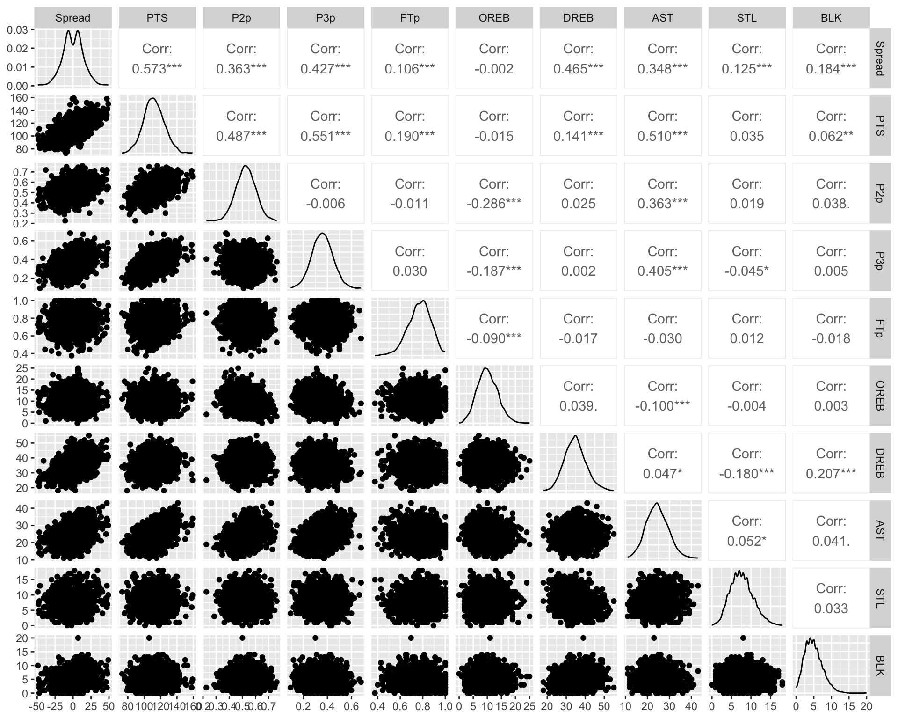
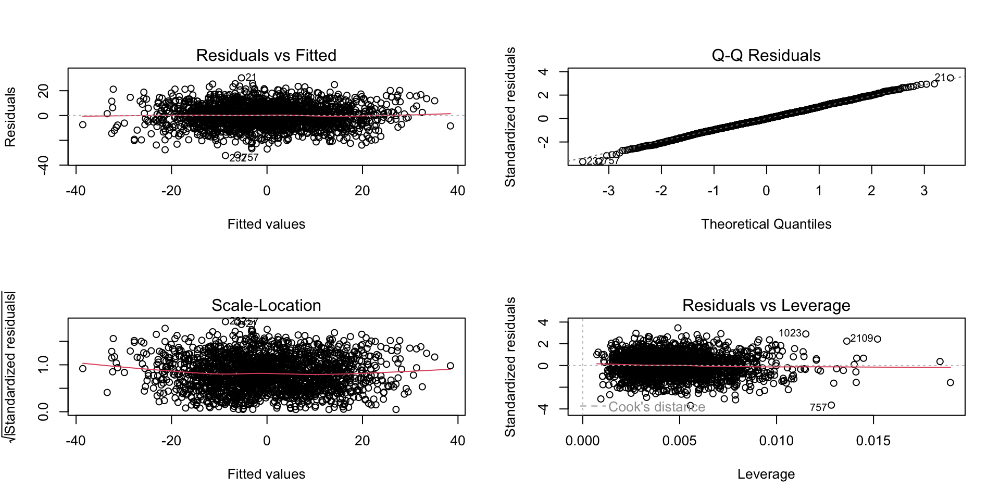
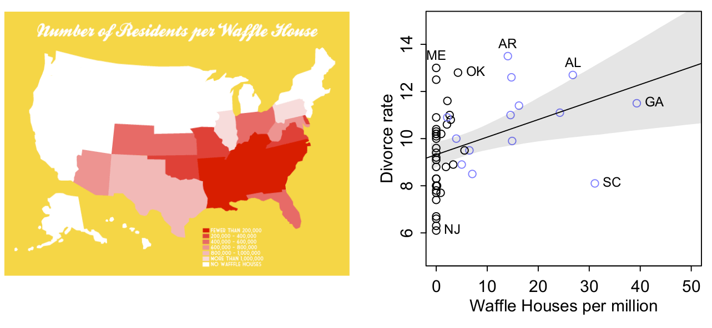
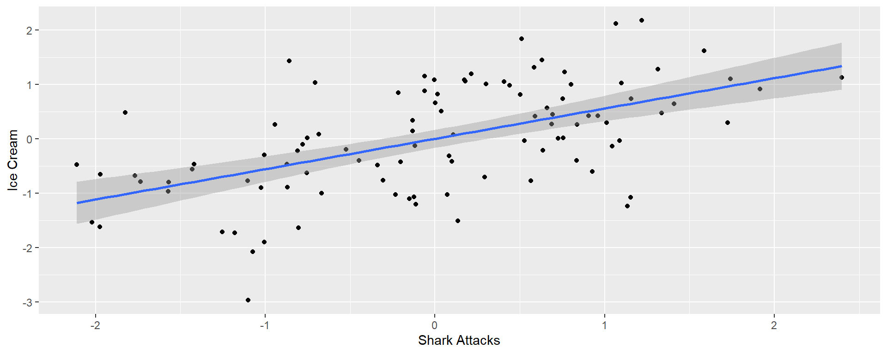
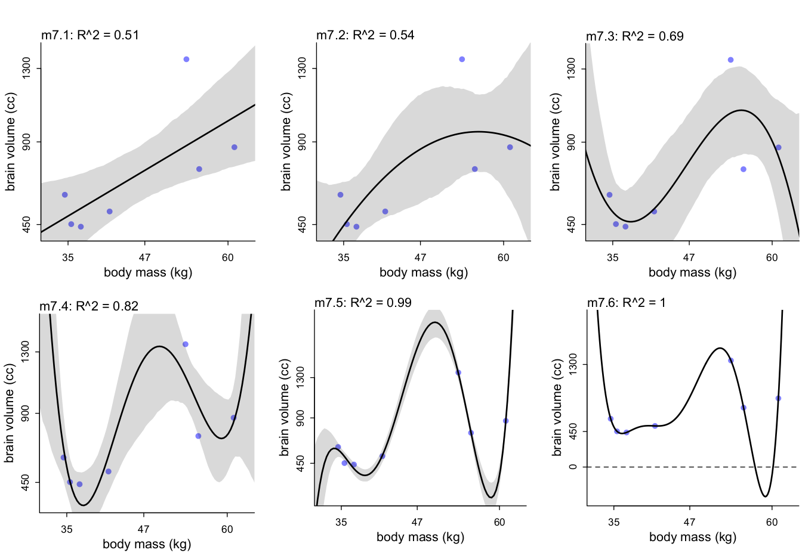
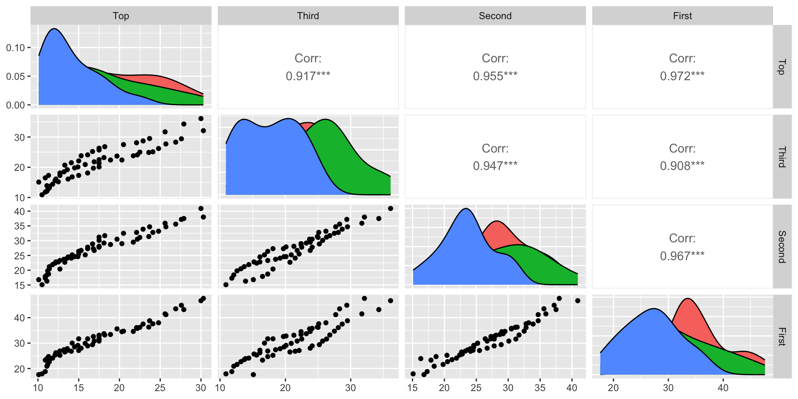
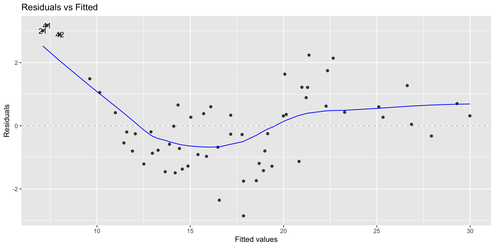

Team Game Spread Outcome MIN PTS P2p P3p FTp OREB DREB
1 ATL 21900014 17 W 48 117 0.6000000 0.3548387 0.8571429 8 34
2 ATL 21900028 4 W 48 103 0.6296296 0.3000000 0.5333333 9 43
3 ATL 21900043 -2 L 48 103 0.4736842 0.3333333 0.6875000 8 37
4 ATL 21900052 -15 L 48 97 0.5454545 0.2820513 0.6666667 9 24
5 ATL 21900066 -9 L 48 97 0.5370370 0.2058824 0.6923077 16 34
6 ATL 21900099 8 W 48 108 0.5333333 0.3666667 0.6875000 9 39
AST TOV STL BLK PF
1 27 13 9 2 15
2 22 18 5 9 26
3 23 21 12 3 25
4 28 20 14 7 29
5 20 16 5 5 15
6 22 18 9 5 20Chapter 7:
Models with Multiple Predictors
Learning Objectives:
- Understand and describe a multiple linear regression, the difference from a simple linear regression, and when each are appropriate
- Fit and display a multiple regression
- Understand and interpret different types of Sums of Squares
- Understand and test for multicollinearity and other assumptions
What is a multiple Regression?
- In a simple regression, there is only one predictor.
- Multiple regression modelling involves many predictors.
When to use multiple predictors
Statistical control of a confound: controlling treatment for some unwanted variability
Multiple causation: multiple things are thought to cause changes in the outcome variable
Interactions: we are interested in how two variables may combine to change our outcome (will cover this in the next chapter)
Multiple Regression
Where to start:
Question and hypothesis + domain knowledge
- What are we interested in testing?
- What data is collected? do those variables make sense?
- What kind of data are my response and predictor variables?
Perform EDA first
- A scatter plot matrix can show nonlinear relationships
- A correlation matrix will only show the strength of pairwise linear relationships
Look for the predictors having the largest correlation with response
- Look for inter-correlations between the predictors and choose the one with high correlation with response variable but uncorrelated with the rest.
Data example
Basketball team summary for 2020 regular season
We have 2118 data points which equates to 1059 games (2 teams per game), 2020 was a short season
Each team in a standard season plays 82 games. That means in total, an NBA season is comprised of 1,230 games.
Spread: Point difference between winning and losing team
PTS: Total points scored by a team in a game
P2p: Percent of 2-pointers made
P3p: Percent of 3-pointers made
FTp: Percent of free-throws made
OREB: Offensive rebounds
DREB: Defensive rebounds
AST: Assists
STL: Steals
BLK: Blocks
Data example
Spread PTS P2p P3p FTp OREB DREB AST
Spread 1.0000 0.5730 0.36338 0.42719 0.1063 -0.00240 0.46470 0.3477
PTS 0.5730 1.0000 0.48713 0.55094 0.1897 -0.01487 0.14131 0.5103
P2p 0.3634 0.4871 1.00000 -0.00601 -0.0105 -0.28585 0.02484 0.3633
P3p 0.4272 0.5509 -0.00601 1.00000 0.0297 -0.18736 0.00164 0.4054
FTp 0.1063 0.1897 -0.01053 0.02967 1.0000 -0.08960 -0.01724 -0.0297
OREB -0.0024 -0.0149 -0.28585 -0.18736 -0.0896 1.00000 0.03882 -0.0996
DREB 0.4647 0.1413 0.02484 0.00164 -0.0172 0.03882 1.00000 0.0468
AST 0.3477 0.5103 0.36333 0.40540 -0.0297 -0.09960 0.04681 1.0000
STL 0.1246 0.0352 0.01897 -0.04479 0.0115 -0.00389 -0.18027 0.0518
BLK 0.1837 0.0623 0.03757 0.00540 -0.0185 0.00311 0.20700 0.0411
STL BLK
Spread 0.12460 0.18367
PTS 0.03525 0.06234
P2p 0.01897 0.03757
P3p -0.04479 0.00540
FTp 0.01153 -0.01849
OREB -0.00389 0.00311
DREB -0.18027 0.20700
AST 0.05178 0.04112
STL 1.00000 0.03267
BLK 0.03267 1.00000Inter-relationships
Full regression in R
Places all of the predictors in the model
Equivalent of throwing everything in and hoping something sticks
Call:
lm(formula = Spread ~ ., data = teams_forlm)
Residuals:
Min 1Q Median 3Q Max
-32.29 -5.72 -0.15 5.66 30.36
Coefficients:
Estimate Std. Error t value Pr(>|t|)
(Intercept) -142.4223 2.8728 -49.58 < 2e-16 ***
PTS 0.0624 0.0269 2.32 0.02 *
P2p 74.1170 3.8391 19.31 < 2e-16 ***
P3p 74.0109 3.3449 22.13 < 2e-16 ***
FTp 15.4686 2.0265 7.63 3.4e-14 ***
OREB 0.7191 0.0623 11.54 < 2e-16 ***
DREB 1.2033 0.0367 32.81 < 2e-16 ***
AST -0.0350 0.0479 -0.73 0.47
STL 1.0685 0.0677 15.79 < 2e-16 ***
BLK 0.3503 0.0784 4.47 8.2e-06 ***
---
Signif. codes: 0 '***' 0.001 '**' 0.01 '*' 0.05 '.' 0.1 ' ' 1
Residual standard error: 8.79 on 2108 degrees of freedom
Multiple R-squared: 0.622, Adjusted R-squared: 0.62
F-statistic: 385 on 9 and 2108 DF, p-value: <2e-16Residuals
Just like with a simple regression we examine residuals to look for patterns
These look great, probably because we have a ton of data in this example.
Multicollinearity
Multicollinearity is where at least two predictor variables are highly correlated.
Multicollinearity does not affect the residual SD very much, and doesn’t pose a major problem for prediction.
The major effects of multicollinearity are:
- It changes the estimates of the coefficients.
- It inflates the variance of the estimates of the coefficients. That is, it increases the uncertainty about what the slope parameters are.
- Therefore, it matters when testing hypotheses about the effects of specific predictors.
Multicollinearity
The impact of multicollinearity on the variance of the estimates can be quantified using the Variance Inflation Factor (VIF < 5 is considered ok).
There are several ways to deal with multicollinarity, depending on context. We can discard one of highly correlated variable, perform ridge regression, or think more carefully about how the variables relate to each other.
Multicollinearity
In R we can examine Multicollinearity using the function vif()
Remember our basketball regression:
PTS P2p P3p FTp OREB DREB AST STL BLK
3.07 2.14 2.24 1.14 1.37 1.14 1.50 1.06 1.05 These values are all small (VIF < 5) so we can continue on in interpreting the regression.
Tidy summary
| term | estimate | std.error | statistic | p.value |
|---|---|---|---|---|
| (Intercept) | -142.422 | 2.873 | -49.575 | 0.000 |
| PTS | 0.062 | 0.027 | 2.320 | 0.020 |
| P2p | 74.117 | 3.839 | 19.306 | 0.000 |
| P3p | 74.011 | 3.345 | 22.126 | 0.000 |
| FTp | 15.469 | 2.027 | 7.633 | 0.000 |
| OREB | 0.719 | 0.062 | 11.538 | 0.000 |
| DREB | 1.203 | 0.037 | 32.809 | 0.000 |
| AST | -0.035 | 0.048 | -0.729 | 0.466 |
| STL | 1.069 | 0.068 | 15.785 | 0.000 |
| BLK | 0.350 | 0.078 | 4.470 | 0.000 |
Variance Explained (Review from Chapter 6)
\(R^2\) is the proportion of variance in \(y\) explained by \(x\) .
\(R^2=\frac{SS~regression}{SS~Total}\)
\(R^2_{adj}\) is adjusted to remove the variation that is explained by chance alone
\(R^2_{adj}=1-\frac{MS~Error}{MS~Total}\)
\(R^2_{adj}\) can also be written as: \(R^2_{adj}=1-\frac{(1-R^2)*(n-1)}{(n-k-1)}\)Now we have more sums of square to add in to our regression
Additional variation explained
Variation in \(Y\) is separated into two parts SSR and SSE.
- The shaded overlap of two circles represent the variation in \(Y\) explained by the \(X\) variables.
The total overlap of \(X_1\) and \(X_2\), and \(Y\) depends on
- relationship of \(Y\) with \(X_1\) and \(X_2\)
- correlation between \(X_1\) and \(X_2\)


Sequential addition of predictors
- Addition of variables decreases SSE and increases SSR and \(R^2\).
- \(s^2\) = MSE = SSE/df decreases to a minimum and then increases since addition of variable decreases SSE but adds to df.
Significance of Type I or Seq.SS
The Type I SS is the SS of a predictor after adjusting for the effects of the preceding predictors in the model.
- Sometimes order matters, particularly with unequal sample sizes
For unbalanced data, this approach tests for a difference in the weighted marginal means. In practical terms, this means that the results are dependent on the realized sample sizes. In other words, it is testing the first factor without controlling for the other factor, which may not be the hypothesis of interest.
F test for the significance of the additional variation explained
R function
anova()calculates sequential or Type-I SS
Type II
Type II SS is based on the principle of marginality.
- Each variable effect is adjusted for all other appropriate effects.
- equivalent to the Type I SS when the variable is the last predictor entered the model.
- Order matters for Type I SS but not for Type II SS
- Each variable effect is adjusted for all other appropriate effects.

Type III SS
Type III SS is the SS added to the regression SS after ALL other predictors including an interaction term.
This type tests for the presence of a main effect after other main effects and interaction. This approach is therefore valid in the presence of significant interactions.
If the interaction is significant SS for main effects should not be interpreted
SS types in action
Consider a model with terms A and B:
Type 1 SS:
SS(A) for factor A.
SS(B | A) for factor B.
Type 2 SS:
SS(A | B) for factor A.
SS(B | A) for factor B.
Type 3 SS:
SS(A | B, AB) for factor A.
SS(B | A, AB) for factor B.
When data are balanced and the design is simple, types I, II, and III will give the same results.
SS explained is not always a good criterion for selection of variables
SS types in action
Analysis of Variance Table
Response: Spread
Df Sum Sq Mean Sq F value Pr(>F)
PTS 1 141195 141195 1829.34 < 2e-16 ***
P2p 1 4002 4002 51.85 8.3e-13 ***
P3p 1 14465 14465 187.42 < 2e-16 ***
FTp 1 584 584 7.56 0.006 **
OREB 1 7082 7082 91.76 < 2e-16 ***
DREB 1 78359 78359 1015.23 < 2e-16 ***
AST 1 10 10 0.13 0.718
STL 1 20082 20082 260.18 < 2e-16 ***
BLK 1 1542 1542 19.98 8.2e-06 ***
Residuals 2108 162703 77
---
Signif. codes: 0 '***' 0.001 '**' 0.01 '*' 0.05 '.' 0.1 ' ' 1Anova Table (Type II tests)
Response: Spread
Sum Sq Df F value Pr(>F)
PTS 416 1 5.38 0.02 *
P2p 28767 1 372.71 < 2e-16 ***
P3p 37787 1 489.57 < 2e-16 ***
FTp 4497 1 58.26 3.4e-14 ***
OREB 10276 1 133.13 < 2e-16 ***
DREB 83083 1 1076.43 < 2e-16 ***
AST 41 1 0.53 0.47
STL 19232 1 249.17 < 2e-16 ***
BLK 1542 1 19.98 8.2e-06 ***
Residuals 162703 2108
---
Signif. codes: 0 '***' 0.001 '**' 0.01 '*' 0.05 '.' 0.1 ' ' 1Anova Table (Type III tests)
Response: Spread
Sum Sq Df F value Pr(>F)
(Intercept) 189696 1 2457.72 < 2e-16 ***
PTS 416 1 5.38 0.02 *
P2p 28767 1 372.71 < 2e-16 ***
P3p 37787 1 489.57 < 2e-16 ***
FTp 4497 1 58.26 3.4e-14 ***
OREB 10276 1 133.13 < 2e-16 ***
DREB 83083 1 1076.43 < 2e-16 ***
AST 41 1 0.53 0.47
STL 19232 1 249.17 < 2e-16 ***
BLK 1542 1 19.98 8.2e-06 ***
Residuals 162703 2108
---
Signif. codes: 0 '***' 0.001 '**' 0.01 '*' 0.05 '.' 0.1 ' ' 1Summary so far
- Defined multiple regression
- Why we might run a multiple regression
- How to perform a multiple regression, examine residuals, multicollinearity
- Variation and R squared
- Sums of Squares types
Learning Objectives:
- Cautionary tales: when correlation misleads us
- How to make models
- Comparing models
- Principles of model selection
Does Waffle Houses cause divorce??
Or is it butter?

And if you want more to impress your friends at a BBQ, the source is: http://www.tylervigen.com/spurious-correlations
Spurious association
- You’ve heard that before: correlation does not imply causation. BUT it doesn’t discard it either
- Hope you are seated: causation does not imply correlation.
- Causation implies conditional correlation (up to linearity issues).
- We need more than just statistical models to answer causal questions.
How do we deal with spurious associations?
Domain knowledge: you know that waffles and butter don’t cause divorce so why might they be correlated?
- Is there another predictor that would be better?
Multiple regressions can disentangle the association between two predictors and an outcome
- Statistical control of a confound
Masked associations
- Association between a predictor variable and an outcome can be masked by another variable.
- You need to observe both variables to see the “true” influence of either on the outcome.
- How do we account for the masking variable (seen as a nuisance)?
Masking situations tend to arise when:
- Both predictors are associated with one another.
- Have opposite relationships with the outcome.

Headline: Higher ice cream sales increase shark attacks!
We’ll predict ice cream sales from the temperature and the number of shark attacks
First we will consider simple regressions


Single regression
| term | estimate | std.error | statistic | p.value |
|---|---|---|---|---|
| (Intercept) | 0.00 | 0.064 | 0 | 1 |
| temp | 0.77 | 0.064 | 12 | 0 |
| term | estimate | std.error | statistic | p.value |
|---|---|---|---|---|
| (Intercept) | 0.000 | 0.083 | 0.00 | 1 |
| shark | 0.557 | 0.084 | 6.64 | 0 |
Multiple regression
| term | estimate | std.error | statistic | p.value |
|---|---|---|---|---|
| (Intercept) | 0.00 | 0.064 | 0 | 1 |
| temp | 0.77 | 0.064 | 12 | 0 |
| term | estimate | std.error | statistic | p.value |
|---|---|---|---|---|
| (Intercept) | 0.000 | 0.083 | 0.00 | 1 |
| shark | 0.557 | 0.084 | 6.64 | 0 |
| term | estimate | std.error | statistic | p.value |
|---|---|---|---|---|
| (Intercept) | 0.000 | 0.064 | 0.000 | 1.000 |
| temp | 0.776 | 0.094 | 8.217 | 0.000 |
| shark | -0.008 | 0.094 | -0.084 | 0.933 |
Masking situation
Tend to arise when
- Both predictors are associated with one another.
- Have different relationships with the outcome

How do we deal with this?
- Statistically there is not really an answer
- The answer lies in the causes and the causes are not in the data; Shark attacks dont cause ice cream sales or vice versa
- Remember that interpreting the (regression) parameter estimates always depends upon what you believe the causal model
Model Selection
- The first step before selection of the best subset of predictors is to study the correlation matrix
- We then perform stepwise additions (forward) or subtractions (backward) from the model and compare them
BUT…
- We saw with the illustration of SS how the significance or otherwise of a variable in a multiple regression model depends on the other variables in the model
- Therefore, we cannot fully rely on the t-test and discard a variable because its coefficient is insignificant
Selection of predictors
- Heuristic (short-cut) procedures based on criteria such as \(F\), \(R^2_{adj}\), \(AIC\), \(C_p\) etc
Forward Selection: Add variables sequentially- convenient to obtain the simplest feasible model
Backward Elimination: Drop variables sequentiallyIf difference between two variables is significant but not the variables themselves, forward regression would obtain the wrong model since both may not enter the model.
- Known as suppressor variables case (like masking variables discussed earlier)
Example: (try)
Call:
lm(formula = y ~ x1, data = suppressor)
Residuals:
Min 1Q Median 3Q Max
-1.1691 -0.6791 -0.0033 0.6441 1.1299
Coefficients:
Estimate Std. Error t value Pr(>|t|)
(Intercept) 11.98876 1.26689 9.46 3.4e-07 ***
x1 0.00375 0.41608 0.01 0.99
---
Signif. codes: 0 '***' 0.001 '**' 0.01 '*' 0.05 '.' 0.1 ' ' 1
Residual standard error: 0.832 on 13 degrees of freedom
Multiple R-squared: 6.24e-06, Adjusted R-squared: -0.0769
F-statistic: 8.11e-05 on 1 and 13 DF, p-value: 0.993
Call:
lm(formula = y ~ x2, data = suppressor)
Residuals:
Min 1Q Median 3Q Max
-1.0900 -0.6334 0.0002 0.6146 1.0403
Coefficients:
Estimate Std. Error t value Pr(>|t|)
(Intercept) 10.632 0.811 13.11 7.2e-09 ***
x2 0.195 0.113 1.74 0.11
---
Signif. codes: 0 '***' 0.001 '**' 0.01 '*' 0.05 '.' 0.1 ' ' 1
Residual standard error: 0.75 on 13 degrees of freedom
Multiple R-squared: 0.188, Adjusted R-squared: 0.126
F-statistic: 3.02 on 1 and 13 DF, p-value: 0.106
Call:
lm(formula = y ~ x1 + x2, data = suppressor)
Residuals:
Min 1Q Median 3Q Max
-0.01363 -0.00945 -0.00228 0.00863 0.01632
Coefficients:
Estimate Std. Error t value Pr(>|t|)
(Intercept) -4.51541 0.06114 -73.8 <2e-16 ***
x1 3.09701 0.01227 252.3 <2e-16 ***
x2 1.03186 0.00368 280.1 <2e-16 ***
---
Signif. codes: 0 '***' 0.001 '**' 0.01 '*' 0.05 '.' 0.1 ' ' 1
Residual standard error: 0.0107 on 12 degrees of freedom
Multiple R-squared: 1, Adjusted R-squared: 1
F-statistic: 3.92e+04 on 2 and 12 DF, p-value: <2e-16Ockham’s razor
Nunca ponenda est pluralitas sine necesitate
(Plurality should never be posited without necessity)
- Problem: fit to sample always (*multi-level models can be counter-examples) improves as we add parameters.
- Dangers of “stargazing”: selecting variables with low p-values (aka ‘lots of stars’). P-values are not designed to cope with over-/under-fitting.
Overfitting
- Overfitting learning too much from the data, where you are almost just connecting the points rather than estimating.
- Underfitting is the opposite, i.e. being insensitive to the data.
- aka Models with fewer assumptions are to be preferred.
- In practice, we have to choose between models that differ both in accuracy and simplicity. The razor is not really a useful guidance for this trade off.
We need tools
All possible models:
An exhaustive screening of all possible regression models can also be done using software
Best Subsets: Stop at each step and check whether predictors, in the model or outside, are the best combination for that step.
- time consuming to perform when the predictor set is large
Remember permutations
For example:
If we fix the number of predictors as 3, then 20 regression models are possible
What criteria do we use?
Multiple options
- R squared
- Sums of squared (different types, for testing predictor significance)
- Information criteria (AIC, BIC etc)
- For prediction: MSD/MSE, MAD, MAPE
- \(C_p\)
Remember its about balance and what you are looking for (fit vs prediction, complexity vs generality)
Note- If a model stands out, it will perform well in terms of all summary measures.
- If a model does not stand out, summary measures will contradict.
When \(R^2\) becomes absurd
Model selection
Residual SD depends on its degrees of freedom
- So comparison of models based on Residual SD is not fully fair
The following three measures are popular prediction modelling and similar to residual SD
Mean Squared Deviation (MSD): mean of the squared errors (i.e., deviations) (also called MSE)
\[\frac{\sum \left({\rm observation-fit}\right)^{{\rm 2}} }{{\rm number~of~ observations}}\]
- Mean Absolute Deviation (MAD)
\[\frac{\sum \left|{\rm observation-fit}\right| }{{\rm number~of~observations}}\]
- Mean Absolute Percentage Error (MAPE)
\[\frac{\sum \frac{\left|{\rm observation-fit}\right|}{{\rm observation}} }{{\rm number~of~observations}} {\times100}\]
Model selection (continued)
Avoid over-fitting.
So place a penalty for excessive model parameters
Akaike Information Criterion (AIC; smaller is better)
\[AIC = n\log \left(\frac{SSE}{n} \right) + 2p\] - Bayesian Information Criterion (BIC) places a higher penalty that depends on, the number of observations.
As a result BIC fares well for selecting a model that explains the relationships well while AIC fares well when selecting a model for prediction purposes.
Other variations: WAIC, AICc, etc (we will not cover them)
Software
In \(R\),
lm()andstep()function will perform the tasksleaps()andHHpackages contain additional functionsdredge()inMuMInwill produce all the subset models given a full model- Also
MASS,car,caret, andSignifRegR packages
R base package step-wise selection is based on \(AIC\) only.
Cross validation (review from Chapter 6)
In sample error vs prediction error
- For simpler models, increasing the number of parameters improves the fit to the sample.
- But it seems to reduce the accuracy of the out-of-sample predictions.
- Most accurate models trade off flexibility (complexity) and overfitting
General idea: - Leave out some observations. - Train the model on the remaining samples; score on those left out. - Average over many left-out sets to get the out-of-sample (future) accuracy.
Cross validated selection: Data example
Consider the pinetree data set which contains the circumference measurements of pine trees at four positions (First is bottom)
Cross validated selection
- Model selection can be done focusing on prediction
- method = “leapForward” & method = “leapBackward” options
library(caret); library(leaps)
set.seed(123)
fitControl <- trainControl(method = "repeatedcv",
number = 5, repeats = 100)
leapBackwardfit <- train(Top ~ ., data = pinetree[, -1],
trControl = fitControl, method = "leapBackward")
summary(leapBackwardfit)Subset selection object
3 Variables (and intercept)
Forced in Forced out
Third FALSE FALSE
Second FALSE FALSE
First FALSE FALSE
1 subsets of each size up to 2
Selection Algorithm: backward
Third Second First
1 ( 1 ) " " " " "*"
2 ( 1 ) "*" " " "*" Polynomial models
- A polynomial model includes the square, cube of predictor variables as additional variables.
- High correlation (multicollinearity) between the predictor variables may be a problem in polynomial models, but not always.
Polynomial models: Data example
We can fit a simple linear regression using the Pine tree data
Call:
lm(formula = Top ~ First, data = pinetree)
Residuals:
Min 1Q Median 3Q Max
-2.854 -0.881 -0.195 0.630 3.176
Coefficients:
Estimate Std. Error t value Pr(>|t|)
(Intercept) -6.334 0.765 -8.28 2.1e-11 ***
First 0.763 0.024 31.78 < 2e-16 ***
---
Signif. codes: 0 '***' 0.001 '**' 0.01 '*' 0.05 '.' 0.1 ' ' 1
Residual standard error: 1.29 on 58 degrees of freedom
Multiple R-squared: 0.946, Adjusted R-squared: 0.945
F-statistic: 1.01e+03 on 1 and 58 DF, p-value: <2e-16Look closer
Looks non-linear
Polynomial models: Data example
Estimate Std. Error t value Pr(>|t|)
(Intercept) 44.121 7.039 6.27 0
poly(First, degree = 3, raw = T)1 -3.972 0.695 -5.71 0
poly(First, degree = 3, raw = T)2 0.142 0.022 6.39 0
poly(First, degree = 3, raw = T)3 -0.001 0.000 -5.95 0```
- For the pinetree example, all the slope coefficients are highly significant for the cubic regression
- Not so for the quadratic regression
``` Estimate Std. Error t value Pr(>|t|)
(Intercept) 3.85 2.450 1.569 0.122
poly(First, degree = 2, raw = T)1 0.10 0.155 0.646 0.521
poly(First, degree = 2, raw = T)2 0.01 0.002 4.319 0.000- Raw polynomials do not preserve the coefficient estimates but orthogonal polynomials do.
Estimate Std. Error t value Pr(>|t|)
(Intercept) 17.40 0.146 119.26 0
poly(First, degree = 2)1 41.01 1.130 36.29 0
poly(First, degree = 2)2 4.88 1.130 4.32 0 Estimate Std. Error t value Pr(>|t|)
(Intercept) 17.40 0.115 151.03 0
poly(First, degree = 3)1 41.01 0.892 45.96 0
poly(First, degree = 3)2 4.88 0.892 5.47 0
poly(First, degree = 3)3 -5.31 0.892 -5.95 0Residual diagnostics
For multiple regression fits, including polynomial fits, examine the residuals as usual to-
- Validate the model assumptions - Look for model improvement cluesQuadratic regression for pinetree data is not satisfactory based on the residual plots shown below:
Categorical predictors
Models can include categorical predictors such as Area in the pinetree dataset
Make sure that you use the factor() function when numerical codes are assigned to categorical variables.
Area effect on Top circumference is clear from the following plot
Indicator variables
Factors are employed in a multiple regression using indicator variables which are simply binary variables taking either zero or one
For for males and females, indicator variables are defined as follows:
- Indicator variable of males: \(~~~~~~~~\begin{array}{cccc} I_{\text {male}} & = & 1 & \text{for males}\\ & & 0& \text{for females} \end{array}\)
- Indicator variable of females \(~~~~~~~~\begin{array}{cccc} I_{\text{female}} & = & 1 & \text{for females}\\ & & 0& \text{for males} \end{array}\)
There are three different areas of the forest in the pinetree dataset. So we can define three indicator variables.
Only two indicator variables are needed because there is only 2 degrees of freedom for the 3 areas.
Regression output
| term | estimate | std.error | statistic | p.value |
|---|---|---|---|---|
| (Intercept) | 20.02 | 1.11 | 17.98 | 0.00 |
| I2 | -1.96 | 1.57 | -1.24 | 0.22 |
| I3 | -5.92 | 1.57 | -3.76 | 0.00 |
- The y-intercept is the mean of the response for the omitted category
20.02is the mean Top circumference for the first Area
- slopes are the difference in the mean response
-1.96is the drop in the mean top circumference in Area 2 when compared to Area 1 (which is not a significant drop)-5.92is the drop in the mean top circumference in Area 3 when compared to Area 1 (which is a highly significant drop)
Analysis of Covariance model employs both numerical and categorical predictors (covered later on).
- We specifically include the interaction between them
Summary
Regression methods aim to fit a model by least squares to explain the variation in the dependent variable \(Y\) by fitting explanatory \(X\) variables.
Matrix plots (EDA) and correlation coefficients provide important clues to the interrelationships.
For building a model, the additional variation explained is important. Summary criterion such as \(AIC\) is also useful.
A model is not judged as the best purely on statistical grounds.